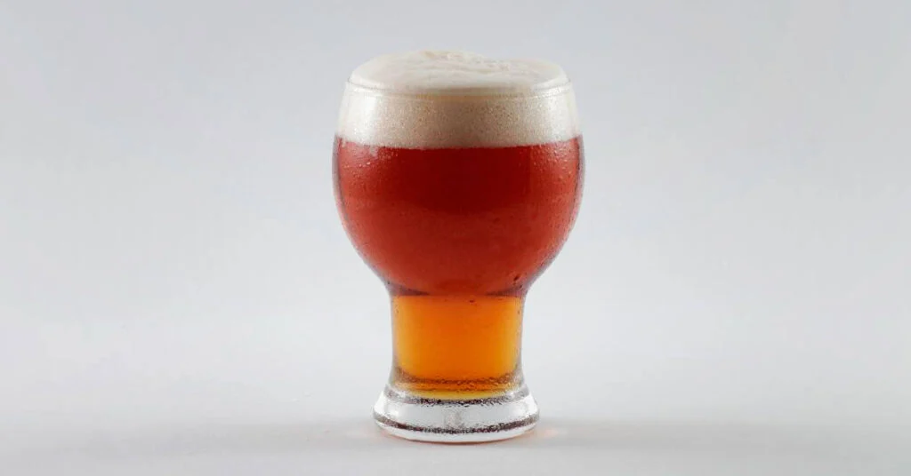

ДАЙДЖЕСТ / BODREEVSHOW
Крафтовое пиво

Хотите узнать, почему крафтовое пиво завоёвывает всё больше поклонников? Разбираемся, чем оно отличается от привычного массового, какие сорта стоит попробовать и где отыскать настоящие шедевры от небольших пивоварен.
Заглянем в мир крафтового пива: от секретов производства до лучших локаций для дегустации. Объясним, почему небольшие пивоварни могут позволить себе смелые эксперименты — и где найти их творения.
Почему крафтовое пиво называют напитком для гурманов? Сравним его с массовым, изучим разнообразие стилей и подскажем, где искать лучшие образцы от независимых пивоварен.
Крафтовое (или ремесленное) пиво - что это такое?
Слово «крафт» — это калька с английского craft, которое переводится как «ремесло». Термин используют для обозначения продукции и деятельности, сосредоточенной не в руках крупных корпораций, а в сфере малых производств. Таким образом, «крафт» буквально отсылает к ремесленникам и ремесленному производству — с его вниманием к деталям, индивидуальным подходом и традиционными методами работы.
Исходя из этого принципа, термин «крафтовое» закрепился за пивом, которое варят не на огромных заводах, а в небольших частных пивоварнях. Такой подход подчёркивает авторство, внимание к деталям и отход от унифицированных стандартов массового производства.
Чем отличается крафтовое пиво от обычного? По сути, технологически — почти ничем. Крафтовые пивоварни, несмотря на меньшие объёмы производства, работают по тем же принципам, что и крупные заводы: закупают профессиональное оборудование и сырьё, оформляют необходимые лицензии и несут полную ответственность за качество продукции. Крафтовое пиво — это не домашний напиток, сваренный кустарным способом, а продукт промышленного уровня, созданный с соблюдением всех норм.
Чем отличается крафтовое пиво от обычного: разбираем ключевые различия.
Согласно российскому законодательству, пивом может называться только напиток, полученный в результате брожения пивного сусла и изготовленный из следующих компонентов:
пивоваренного солода;
пивоваренного солода;
хмеля или хмелепродуктов;
хмеля или хмелепродуктов;
воды;
воды;
пивных дрожжей.
пивных дрожжей.
Это требование распространяется на всю продукцию — независимо от масштаба производства: как на пиво крупных заводов, так и на продукцию крафтовых пивоварен. В соблюдении базовых технологических норм крафтовые производители не отличаются от промышленных.
Тем не менее, между ними существуют и значимые различия — они касаются философии производства, ассортимента и подхода к рецептуре.
Объём партии — одно из ключевых отличий крафтовой пивоварни от крупного завода. Из‑за существенно меньших производственных мощностей небольшие пивоварни выпускают пиво ограниченными партиями, в то время как крупные предприятия производят его в промышленных масштабах.
Стоимость крафтового пива обычно превышает цену массового — и это во многом обусловлено масштабами производства. Небольшие пивоварни выпускают ограниченные партии, что не позволяет добиться такого же снижения себестоимости, как на крупных заводах. Кроме того, крупные производители имеют возможность поставлять продукцию в федеральные торговые сети на выгодных условиях, что также влияет на конечную цену для потребителя.
Места реализации крафтового пива отличаются от массового. Хотя отдельные производители представлены в крупных торговых сетях, это скорее исключение. Основная точка продаж — специализированные пивные магазины и бары, где ценители могут найти широкий ассортимент крафтовых сортов.
Небольшие объёмы производства дают крафтовым пивоварням значительную свободу в экспериментах с рецептурами. В отличие от крупных заводов, они могут позволить себе смелые решения — ведь финансовые потери от неудачной небольшой партии несопоставимы с убытками от массового выпуска некондиционного продукта. Это позволяет крафтовым производителям активно тестировать новые вкусы и стили. Небольшие объёмы производства дают крафтовым пивоварням значительную свободу в экспериментах с рецептурами. В отличие от крупных заводов, они могут позволить себе смелые решения — ведь финансовые потери от неудачной небольшой партии несопоставимы с убытками от массового выпуска некондиционного продукта. Это позволяет крафтовым производителям активно тестировать новые вкусы и стили.
Стили крафтового пива
В отличие от привычного деления пива на «светлое» и «тёмное», ассортимент крафтового пива включает множество стилей и разновидностей. Такое разнообразие достигается за счёт:
использования различных сортов хмеля (в т. ч. новых селекционных разработок);
экспериментов с дополнительными ингредиентами (фрукты, специи, травы и т. д.);
применения разных методов выдержки (например, в дубовых бочках).
Это позволяет крафтовым пивоварам создавать напитки с уникальными вкусовыми профилями и расширять границы традиционных стилей.
American Pale Ale (APA, американский светлый эль) — один из самых распространённых стилей в крафтовом пивоварении. По сути, это крафтовый аналог традиционного светлого пива: простой и понятный вкус с лёгкой горчинкой и отчётливым ароматом хмеля. Крепость обычно составляет 4,5–6,2%, а цвет варьируется от светло‑золотистого до янтарного (5–14 SRM).
India Pale Ale (IPA, индийский светлый эль) относится к категории светлого пива с повышенным содержанием хмеля. Это придаёт напитку выраженную горчинку и богатый аромат, в котором нередко прослеживаются хвойные, цитрусовые или цветочные ноты. Характер вкуса и запаха напрямую зависит от сорта используемого хмеля — разные его разновидности формируют уникальный профиль каждой партии IPA.
Porter (портер) — сорт тёмного пива с богатой историей: он появился в Лондоне в XVIII веке и получил название благодаря популярности среди портовых грузчиков. Для его производства используют не менее двух видов солода, что создаёт сложный вкусовой профиль — сочетание сладости и горечи. Портер крепче, чем APA и IPA: крепость обычно составляет 4,5–7%. Цвет — от тёмно‑коричневого до почти чёрного (20–40 SRM).
Stout (стаут) исторически связан с портером, но имеет принципиальные отличия в технологии производства. Изначально крепкие портеры иногда называли «стаут‑портер», что породило распространённую путаницу. Ключевая особенность стаута — использование жжёного солода, получаемого путём прожарки ячменя. Это придаёт напитку характерный аромат и привкус с нотами кофе, шоколада или какао. При этом крепость стаута не обязательно высокая: например, знаменитый Guinness имеет всего 4,2%.
Stout (стаут) исторически связан с портером, но имеет принципиальные отличия в технологии производства. Изначально крепкие портеры иногда называли «стаут‑портер», что породило распространённую путаницу.
Ключевая особенность стаута — использование жжёного солода, получаемого путём прожарки ячменя. Это придаёт напитку характерный аромат и привкус с нотами кофе, шоколада или какао. При этом крепость стаута не обязательно высокая: например, знаменитый Guinness имеет всего 4,2%.
Sour Ale (кислый эль) — стиль пива, возрождающий старинные технологии. До появления пастеризации большинство пива имело лёгкую кислинку, и сегодня этот вкус снова набирает популярность. Характерная кислотность достигается за счёт: кислого брожения с участием специальных микроорганизмов (лактобактерий, бреттаномицетов и др.); сухого хмеления, как и в традиционном эле. Особо ценятся бельгийские версии Sour Ale — например, ламбики, гёзы, фландрские красные и коричневые эли. Они отличаются сложной вкусовой палитрой и часто выдерживаются в дубовых бочках.
Sour Ale (кислый эль) — стиль пива, возрождающий старинные технологии. До появления пастеризации большинство пива имело лёгкую кислинку, и сегодня этот вкус снова набирает популярность.
Характерная кислотность достигается за счёт:
кислого брожения с участием специальных микроорганизмов (лактобактерий, бреттаномицетов и др.);
кислого брожения с участием специальных микроорганизмов (лактобактерий, бреттаномицетов и др.);
сухого хмеления, как и в традиционном эле.
сухого хмеления, как и в традиционном эле.
Особо ценятся бельгийские версии Sour Ale — например, ламбики, гёзы, фландрские красные и коричневые эли. Они отличаются сложной вкусовой палитрой и часто выдерживаются в дубовых бочках.
Gose (гозе) — традиционный немецкий стиль пива, зародившийся в городе Гослар. Его ключевые особенности — лёгкая солоноватость и ноты кориандра во вкусе. Обычно гозе относится к лёгким сортам: содержание алкоголя составляет 4,2–4,8%.
В России этот стиль активно развивается: местные пивовары экспериментируют с рецептурами, создавая необычные вариации — фруктовые, томатные, грибные, а также со вкусами традиционных блюд (борщ, солянка) или азиатских супов (том‑ям, том‑кха).
Рейтинг крафтовых пивоварен глазами тех, кто знает толк в пиве
DreamTeam Brew (Москва)
Paradox Brewery (Санкт-Петербург)
AF brew (Санкт-Петербург)
Stamm beer (Москва)
Red button (Нижневартовск)
Ostrovica (Аша, Челябинская область)
Big Village (Краснодар)
Zagovor (Москва)
Velka Morava (Москва)
Особенности состава и процесса изготовления крафтового пива
Состав и технология производства крафтового пива в целом идентичны массовому: в основе — те же базовые ингредиенты (вода, солод, хмель, дрожжи) и стандартные этапы процесса (варка, брожение, дображивание).
Ключевое отличие — свобода в использовании дополнительных компонентов. Крафтовые пивовары активно экспериментируют с необычными ингредиентами: добавляют фрукты, ягоды, специи, мёд, кофе, какао‑бобы, копчёности и даже экзотические компоненты. Это позволяет создавать уникальные вкусовые профили, которых нет в массовом сегменте.
Процесс изготовления крафтового пива подразделяется на три основных этапа, а именно: заваривание сусла, процесс брожения и последующее созревание (дображивание)
Процесс варки
Данный этап является наиболее кратким из трех основных стадий производства и предполагает использование варочного и фильтрационного котлов, а также горячей воды. Процедура начинается с нагрева воды до температуры кипения с последующим внесением измельченного зерна, состав и количество которого определяются рецептурой конкретного сорта пива. После достижения точки кипения поддерживается режим термической обработки без интенсивного бурления.
Следующей стадией является фильтрация, в ходе которой зерновая масса перемещается в фильтрационный чан. На данном этапе осуществляется замер плотности сусла, что позволяет спрогнозировать итоговую крепость напитка: существует прямая зависимость между показателем плотности и содержанием алкоголя в конечном продукте. Завершающим этапом варки служит внесение хмеля с последующим кипячёнием смеси в течение приблизительно полутора часов.
Процесс ферментации
По завершении этапа варения полученное охмеленное сусло подвергается охлаждению и последующему перемещению в ферментационную ёмкость. На данной стадии осуществляется внесение дрожжевой культуры. Продолжительность процесса ферментации при соблюдении температурного режима (комнатная температура) может составлять несколько суток.
Процесс вторичной ферментации (дображивания)
Заключается в переливе пива в отдельную ёмкость по завершении основного этапа брожения. В данном резервуаре напиток подвергается созреванию в течение приблизительно трех недель
Рекомендации по выбору и употреблению пива
При выборе пива обязательно оцените его аромат. Качественный напиток не должен иметь резких или неприятных запахов — это может свидетельствовать о нарушении технологии производства либо неправильном хранении. Особое внимание уделите наличию посторонней кислоты: если она ощущается в аромате, хотя не характерна для выбранного стиля пива, от употребления лучше отказаться.
При открытии банки или бутылки пива обратите внимание на объём пены. Избыточное её количество может свидетельствовать о дефекте напитка — например, нарушении технологии розлива, хранения или герметичности упаковки. В норме пена должна быть умеренной, устойчивой и однородной.
Распространённый миф: якобы лучшее пиво — только разливное, а подача через кран в баре гарантирует высокое качество. Это не так. Качество напитка не зависит от формата упаковки или способа подачи. Пиво в банке, бутылке или кеге (и, соответственно, на кране) может быть одинаково качественным — при условии соблюдения технологии производства и правил хранения. Разливное пиво в баре поступает в систему розлива из кег, и его качество напрямую зависит от: условий транспортировки и хранения кега; чистоты пивного крана и линии розлива; соблюдения сроков реализации после подключения кега.
Распространённый миф: якобы лучшее пиво — только разливное, а подача через кран в баре гарантирует высокое качество. Это не так. Качество напитка не зависит от формата упаковки или способа подачи.
Пиво в банке, бутылке или кеге (и, соответственно, на кране) может быть одинаково качественным — при условии соблюдения технологии производства и правил хранения. Разливное пиво в баре поступает в систему розлива из кег, и его качество напрямую зависит от:
условий транспортировки и хранения кега;
условий транспортировки и хранения кега;
чистоты пивного крана и линии розлива;
чистоты пивного крана и линии розлива;
соблюдения сроков реализации после подключения кега.
соблюдения сроков реализации после подключения кега.
Распространённый миф: якобы лучшее пиво — только разливное, а подача через кран в баре гарантирует высокое качество. Это не так. Качество напитка не зависит от формата упаковки или способа подачи. Пиво в банке, бутылке или кеге (и, соответственно, на кране) может быть одинаково качественным — при условии соблюдения технологии производства и правил хранения. Разливное пиво в баре поступает в систему розлива из кег, и его качество напрямую зависит от: условий транспортировки и хранения кега; чистоты пивного крана и линии розлива; соблюдения сроков реализации после подключения кега.
Распространённый миф: якобы лучшее пиво — только разливное, а подача через кран в баре гарантирует высокое качество. Это не так. Качество напитка не зависит от формата упаковки или способа подачи.
Пиво в банке, бутылке или кеге (и, соответственно, на кране) может быть одинаково качественным — при условии соблюдения технологии производства и правил хранения. Разливное пиво в баре поступает в систему розлива из кег, и его качество напрямую зависит от:
условий транспортировки и хранения кега;
условий транспортировки и хранения кега;
чистоты пивного крана и линии розлива;
чистоты пивного крана и линии розлива;
соблюдения сроков реализации после подключения кега.
соблюдения сроков реализации после подключения кега.
Если вы не уверены, какое пиво выбрать, воспользуйтесь приложением Untappd. Оно работает по принципу популярного винного приложения Vivino: пользователи оставляют отзывы, ставят оценки и делятся впечатлениями о напитках. С помощью Untappd можно узнать: вкусовые характеристики пива (ноты во вкусе и аромате); крепость (% ABV); стиль пива; средний рейтинг на основе тысяч оценок; информацию о пивоварне и особенностях рецептуры. Дополнительно в приложении есть функция сканирования QR‑кода или штрихкода на упаковке — это позволяет мгновенно попасть на страницу конкретного сорта.
Если вы не уверены, какое пиво выбрать, воспользуйтесь приложением Untappd. Оно работает по принципу популярного винного приложения Vivino: пользователи оставляют отзывы, ставят оценки и делятся впечатлениями о напитках.
С помощью Untappd можно узнать:
вкусовые характеристики пива (ноты во вкусе и аромате);
вкусовые характеристики пива (ноты во вкусе и аромате);
крепость (% ABV);
крепость (% ABV);
стиль пива;
стиль пива;
средний рейтинг на основе тысяч оценок;
средний рейтинг на основе тысяч оценок;
информацию о пивоварне и особенностях рецептуры.
информацию о пивоварне и особенностях рецептуры.
Дополнительно в приложении есть функция сканирования QR‑кода или штрихкода на упаковке — это позволяет мгновенно попасть на страницу конкретного сорта.
При выборе крафтового пива отдавайте предпочтение проверенным производителям. Чтобы найти качественный продукт, лучше обращаться в специализированные бары или магазины крафтового пива.
Консультанты в таких заведениях обычно хорошо знакомы с ассортиментом и могут:
подсказать особенности конкретного сорта (вкус, аромат, крепость, горечь);
подсказать особенности конкретного сорта (вкус, аромат, крепость, горечь);
порекомендовать пиво под ваши предпочтения или к определённому блюду;
порекомендовать пиво под ваши предпочтения или к определённому блюду;
рассказать о пивоварне и её философии;
рассказать о пивоварне и её философии;
дать советы по подаче и употреблению (температура, бокалы).
дать советы по подаче и употреблению (температура, бокалы).
Такой подход повышает шансы приобрести действительно качественный и интересный напиток.